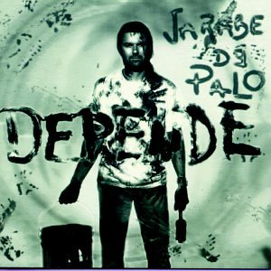

Jarabe de Palo
Información
BIOGRAFÍA
Jarabe de Palo fue un grupo de rock español formado en 1995. Estuvo liderado por el cantante, compositor y guitarrista Pau Donés hasta su fallecimiento el 9 de junio de 2020.
Depende
- "Depende"
- "Pura sangre"
- "Te miro y tiemblo"
- "Plaza de las palmeras"
- "Realidad o sueño"
- "Agua"
Click para escuchar
- "Perro apaleao"
- "Vivo en un saco"
- "Toca mi canción"
- "Duerme conmigo"
- "Vive y deja vivir"
- "Mi mundo en tu mano"
- "Adiós"
- "A lo loco" (con Celia Cruz)